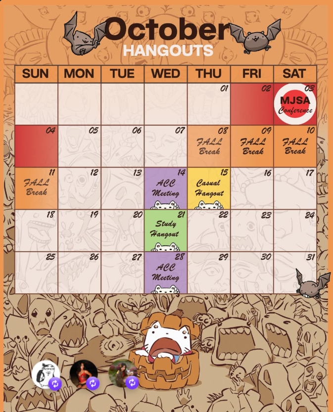

MANY CULTURES. ONE COMMUNITY.
A little culture.
A lot of connection.
Your next friendship starts here. Explore the cultures of Asia, share experiences, and find your community at Kent State.
Curious about culture?
You're in the right place.
A world of perspectives.
great memories.THE ACC SCRAPBOOK
Room for your favorite moments ♡
share.
belong.
Our story, still being written ↗
01 / OUR STORY
Different roots.
Shared experiences.
We're the Asian Culture Club at Kent State — a place to connect through the cultures, perspectives, and stories of Asia.
ACC supports and explores cultures across all of Asia: East, Southeast, South, Central, and West Asia. From Arab and Indian cultures to the many other communities across the continent, we make space for shared traditions, different perspectives, and lasting friendships.
We welcome Muslim communities and people of every faith, heritage, and background. Asia holds many cultures and religions, and you do not need to be Asian to join the conversation.
Meet ACC on Kent State's directory ↗02 / SAVE THE DATE
Make room for
something good.
Meetings, hangouts, and everything in between.
Your next ACC moment starts here.

03 / THE SCRAPBOOK
The moments
we keep.
A space for our event photos and shared memories.
More stories to come.
Club photos will appear here once the team adds approved images.
04 / BEHIND THE SCENES
Different talents.
One ACC team.
From our two co-presidents to our creative, events, and membership teams, meet the people who bring our community together.
Meet all the officers ↗The faces behind ACC.
Leadership · Creativity · Community
Get to know the team ↗A FEW THINGS TO KNOW
First time?
Start here.
What is ACC?
ACC stands for Asian Culture Club, a cultural student organization at Kent State University focused on learning, community, and friendship.
Do I need to know about Asian cultures already?
Curiosity is a great starting point. Visit our Kent State organization page or message the club to learn about participating.
Where and when do you meet?
Our club-designed calendar shares meeting and hangout dates. Check @kentstateacc for the latest schedule, times, and locations.
How can I get involved?
Visit our Kent State organization page for membership information, or reach out on Instagram to ask about the next event.
THERE'S A PLACE FOR YOU HERE.
New faces.
Future friends.
Take the first step. Find ACC on campus and stay in the loop.